Although Orchard includes the Page and Blog Post content types by default, it is very easy to create a custom content type (or even extend the definition of an existing content type) using the admin panel. By default, the Content Types feature is enabled. This feature must be enabled to create a custom content types. If needed, you can manually enable the feature in the Manage Features page.
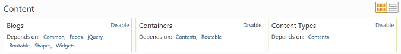
To create a content type, Click Content Definition and select the Content Types link in the admin panel.
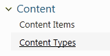
On this screen, you can see the available content types in the system. Notice that it is possible to create and list content items of some of these types (such as "Page"), whereas others only allow you to edit the definition of the type here (such as Comments and Widgets, since these have a dedicated/custom admin experience for creating and listing these items instead).

If you click "List Items", to list the items of the "Page" type, you can see the available content items of this type ("Page") in the site, similar to the "Manage Content" screen in the admin menu).
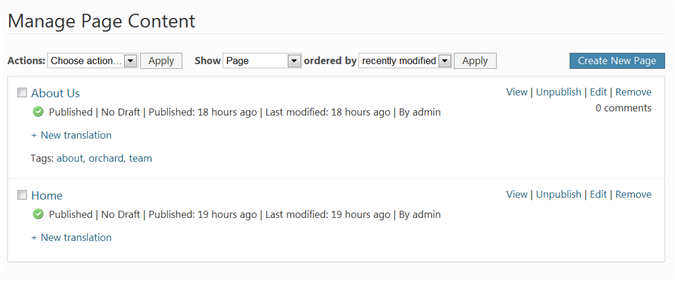
You can also edit the definition of the Page type by clicking "Edit" for this type.
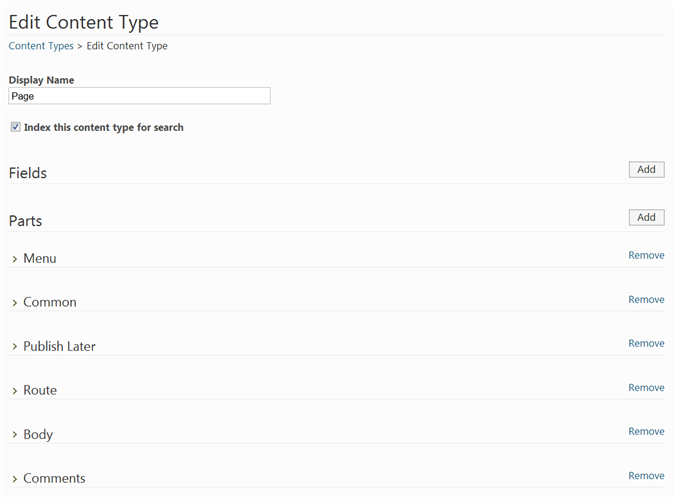
A content type in Orchard is made up of fields and parts. An good overview of these concepts is described in Basic Orchard Concepts. A field is something specific to the type; for example, a Product type might have SKU and Price fields. A part, however, is a reusable component that can be attached to one or more types. For example, the Autoroute part gives a type the ability to be addressed on the front-end via a route/url. In some ways, you can think of a type as having fields, and being made up of one or more parts. This is actually reflected in the underlying code in Orchard as well. To treat a blog post as a AutoroutePart and access it's AutoroutePart.Slug property, you would write something like this: post.As<AutoroutePart>.Slug. Fortunately you don't have to write code to have fun with types and parts. We are going to look at this in more detail by way of example in the next section.
Defining a New Content Type
Let's define a custom content type. Suppose you wanted to define an "Event" type, for listing events with location and date fields. To do this in the Manage Content Types screen, click on Create new type.
Type the name "Event" for the content type. The Content Type Id field is automatically populated with "Event" which you can keep.
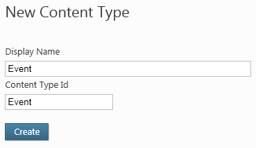
Click Add to add a field.
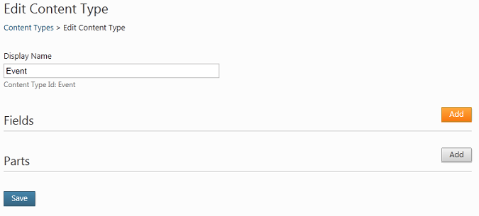
Currently Orchard only includes a single field type (TextField), but more can be created as extensions to Orchard (for example, CheckBoxField, EmailField, TextAreaField, DateTimeField, etc), and a number of additional fields are available under Gallery > Modules as optional downloads. Type "Location" for the name of the field, and click Save.
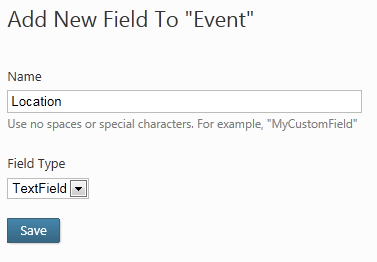

The field is now listed in the Event type screen.

Go ahead and repeat the previous two steps to add a second field named "Date".
To add a part to your type, click "Add" in the "Parts" section of the Event type.
Here you can see the available parts in Orchard (as of the current release). For our Event type, we want to be able to comment on the event ("Comments" part), tag the event ("Tags part"), access the event from the front-end via a URL/route ("Autoroute" part), add the event to the main menu ("Menu" part), and be able to publish the event immediately, on a schedule, or as a draft ("PublishLater" part).
Also add the "Common" part so that your items can appear in lists of content items.
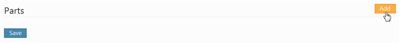
Types, fields and parts can have settings as well. The specific settings that are available on the fields or parts is determined by the features that are activated in Orchard. If we have enabled the "Indexing" feature, there is a setting to "Index this content type for search" and on each field, a setting to "Include in the index". Select these options for the "Location" field of the custom "Event" type. This will enable visitors of your site to search by location on the front-end (when the "Search" feature is enabled). Hit Save.
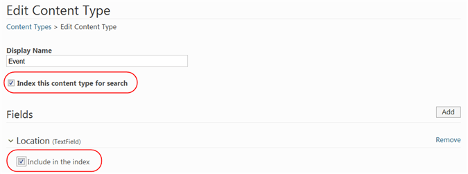

Now that we have defined our custom content type, let's create a new item of this type. Notice the "Create New Event" link in "Manage Content Types".
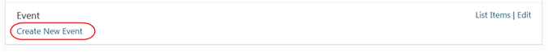
Similarly, there is a new admin menu link entitled Event under New. Click either one of these links to create a new "Event" content item.
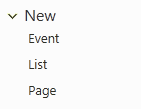
We can see that the editor for our "Event" type has all the fields and parts we defined. It has a Title because of the TitlePart and Permalink because of the AutoroutePart, a Location because of the fields we added, a Tags input from the Tags part, a Show on main menu checkbox from the Menu part, and the ability to enable comments from the Comments part. The fact that we can Publish Now, Publish Later or Save As Draft is given by the Publish Later part. Once you have filled in these fields, go ahead and publish the event.
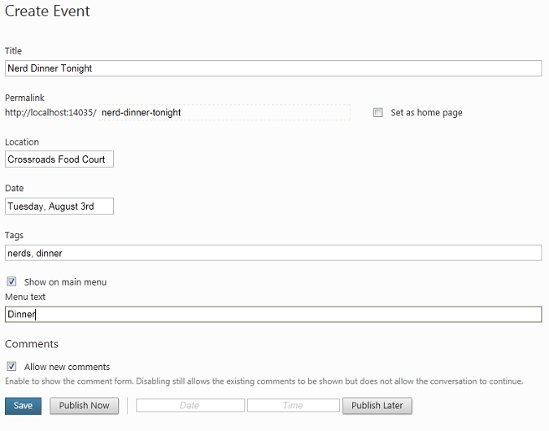
Looking at the "Manage Content" screen in the Orchard admin panel, we can see our event item listed among the pages in the site!
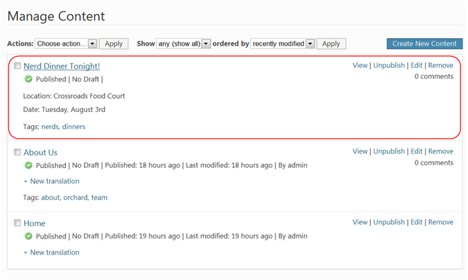
On the site's front-end notice the event has been added to the main menu (as expected), and that our fields and parts are being displayed correctly here as well.
It is possible to customize the way the event appears and template its rendering. See Template File Syntax Guide for more information on how to do that.
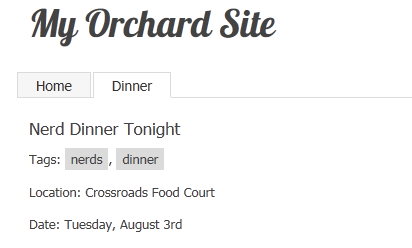
Let's try out the Search capability against our new content type. Make sure you have first enabled the Indexing, Search, and Lucene features in the Features admin screen. Now visit the Search Index page to view the available fields that are indexed. You should see the event-location field in the index as expected (if not, just rebuild the index and you'll see it).
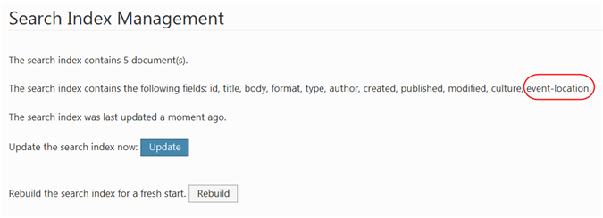
We can tell the Search feature to query this field by going to the Settings admin screen and adding this field to the Search settings.
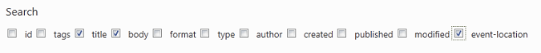
On the front-end type a keyword that matches the location of your event.
Search indexing has indexed our Location field and our event appears in search results as expected!
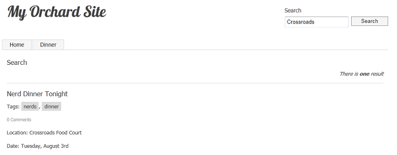
This concludes the tutorial on custom content types. If you are interested in delving further, check out the related tutorials on this site for how to build a custom type, field or part using code.
Change History
- Updates for Orchard 1.8
- 9-6-14: Updated all screen shots for creating custom content type.